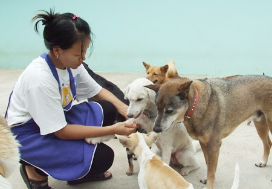
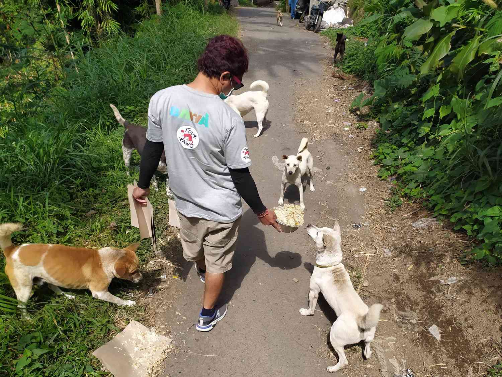
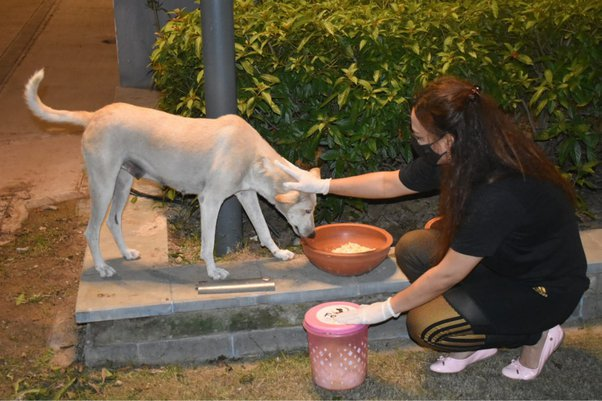
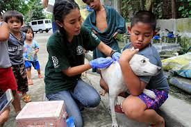
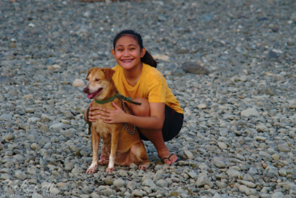

Help save lives with us
Volunteering at CI-PAWS
If you love animals, would like to work with dogs or cats, then join this great international and ever growing group of animal enthusiasts, for an experience not to be missed! We regularly need help so volunteers will be welcome at any time of the year.
Volunteers' Tasks
Why should you become an CI-PAWS volunteer
Our dogs and cats are waiting for someone just like you to give them the love and affection they need to become sociable and adoptable.
Enjoy a unique lifetime experience in a most original scenario where you meet like-minded people from all over the world and can sample real Filipino life among the locals.
You will have the opportunity to employ your skills to improve the situation of the rescued animals. Whether you enjoy gardening, like walking dogs, pet cats or animal photography, we have a job for you!
What will you experience?
Ready to take care of our animals?
Fill up the volunteer application
Volunteer Requirements
Volunteer Registration
First Name
Last Name
Email Address
Address
Address (Optional)
LOCATION